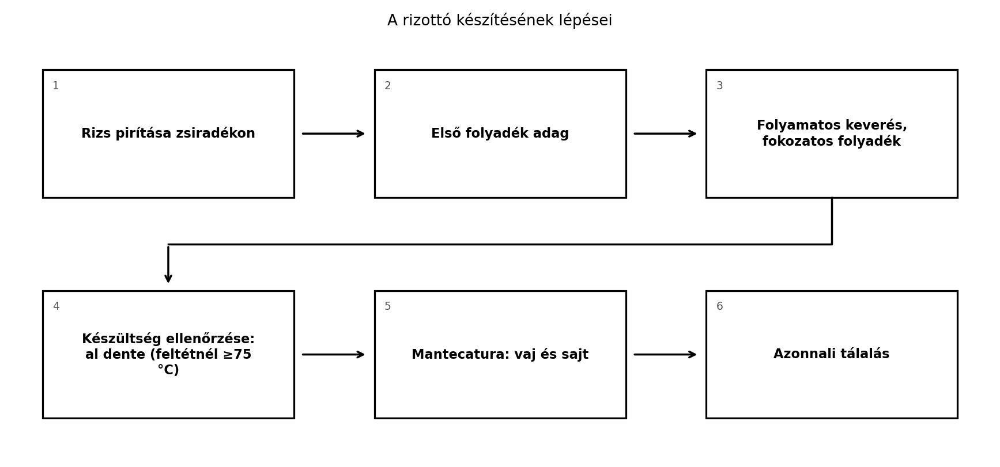

Egy forgalmas étteremben a vendég krémes, forró gombás rizottót rendel. A szakácsnak egyszerre kell figyelnie arra, hogy a rizs ne legyen kemény, de ne is főjön szét, a végeredmény pedig selymes, krémes állagú legyen. A rizottó nem egyszerű párolt rizs: a folyadékot fokozatosan kell adagolni, közben keverni kell, hogy a rizs felszínéről kioldódó keményítő bekrémesítse az ételt. Ha a szakács rossz rizsfajtát választ, vagy egyszerre önti rá az összes alaplevet, a vendég ragacsos, szétfőtt vagy éppen kemény rizst kap.
A sajtból készülő meleg előételeknél – például rántott sajt, sajtropogós vagy sajtfelfújt – a fő kockázat a sajt kifolyása a panírból, illetve a felfújt összeesése. A pontos technológia és a hőmérséklet-ellenőrzés itt élelmiszer-biztonsági és minőségi kérdés is.
A rizottó készítése egy körfolyamathoz hasonlít: a rizst forró zsiradékon megpirítjuk, majd kis adagokban, folyamatos keverés közben hozzáadjuk a forró alaplevet. A rizs lassan felszívja a folyadékot, a keverés hatására a szemek felszínéről keményítő oldódik ki, és ez sűríti be az ételt. A végén hideg vajat és reszelt sajtot keverünk bele – ezt nevezzük mantecaturának –, amitől az állag selymes lesz.

A folyamatábra azt mutatja, hogy a rizottó csak frissen, a maghőmérséklet ellenőrzése után tálalható. A végső keverés (mantecatura) után az ételt már nem szabad sokáig melegen tartani, mert a keményítő tovább duzzad, és az állag ragacsossá válik.
Definíció. A rizottó (olasz risotto) olyan rizses étel, amelyet speciális, magas keményítőtartalmú rizsfajtából készítünk. A rizst forró zsiradékon megpirítjuk, majd forró alaplét (fond, stock) adunk hozzá fokozatosan, gyakori keverés közben. A cél egy krémes, mégis harapható rizsállag.
Definíció. A mantecatura a rizottó befejező művelete: a tűzről lehúzott rizottóba hideg vajat és reszelt sajtot (általában parmezánt) keverünk. A hideg zsiradék emulgeálja a keményítős folyadékot, így alakul ki a selymes, fényes állag.
Szabály. Rizottóhoz csak magas keményítőtartalmú, úgynevezett rizottórizst használjunk, például Arborio, Carnaroli vagy Vialone Nano fajtát (ellenőrizendő: az elérhető fajták a beszerzési helyen). A hosszú szemű párolt rizs nem alkalmas, mert kevesebb keményítőt ad le, és a szemek szétesnek vagy szárazak maradnak.
Definíció. A sajtfelfújt (sajtszufflé) olyan sós felfújt, amelynek alapja sűrű besamel mártás, amelybe tojássárgáját és reszelt sajtot keverünk, majd óvatosan beleforgatjuk a kemény habbá vert tojásfehérjét. A massza sütés közben megnő, és azonnal tálalni kell, mert a gőz távoztával összeesik.
Szabály. A bundázott sajtot sütés előtt le kell hűteni, sőt rövid időre fagyasztani, hogy a panír megszilárduljon, és a sajt ne olvadjon ki a bunda alól a forró zsiradékban.
Higiénia. A HACCP-alapú gyakorlatban a rizottó és a sajtos ételek hőkezelésénél tanulási értékként legalább 75 °C maghőmérsékletet ellenőrzünk (főleg a nyers feltéteknél és az újramelegítésnél), a melegen tartás a 22. fejezetben használt minimum (legalább 63 °C) felett történik (ellenőrizendő: NÉBIH-útmutató, üzemi HACCP-terv; a 852/2004/EK rendelet nem ír elő konkrét maghőmérsékletet). A főtt rizs különös kockázata a Bacillus cereus: spórái túlélik a főzést, és ha a rizs lassan hűl vagy langyosan áll, olyan hőstabil toxint termelhet, amelyet az újramelegítés sem semmisít meg. Ezért a maradékot azonnal, sekély edényben, gyorsan hűtsd 5 °C alá (ellenőrizendő: a HACCP-tervben rögzített idő), legfeljebb egyszer melegítsd újra, és amit nem tudtál előírás szerint visszahűteni, azt dobd ki.
Allergén. A rizottó alapja gluténmentes rizs, de a felhasznált alaplé, vaj, sajt és a feltét allergéneket tartalmazhat. A sajtok tejallergének; a bor kén-dioxidot (szulfitot) tartalmazhat. A rántott sajt bundája glutént (liszt, zsemlemorzsa) és tojást tartalmaz. Laktózérzékeny vendégnek csak laktózmentes tejet és sajtot használhatunk, és kerülni kell a keresztszennyeződést. A laktózmentes termék tejfehérjét tartalmaz: a tej allergént továbbra is jelölni kell, tejallergiás vendégnek nem adható.
Megjegyzés. A rizottó igazi krémes állagát a rizs keményítője adja, ezért ne mossuk meg a rizst főzés előtt, mert a lemosott keményítő hiányzik majd a krémességhez.
A rizottó alapja mindig azonos, de a feltéttel és a folyadékkal változtatható:
| Változat | Jellemző hozzávalók | Megjegyzés |
|---|---|---|
| Sáfrányos rizottó (risotto alla milanese) | marhacsont-alaplé, sáfrány, vaj, parmezán | Klasszikus milánói változat. |
| Gombás rizottó | csiperke, vargánya, szárított gomba áztatóleve | A gombát először pirítjuk, majd a rizzsel együtt főzzük. |
| Zöldséges rizottó | cukkini, borsó, spárga, parmezán | A zöldségeket roppanósra hagyjuk, vagy előfőzzük. |
| Tengeri rizottó | garnélarák, kagyló, tintahal, hal alaplé | Allergén: rákfélék, puhatestűek, hal. |
| Sajtos rizottó | Gorgonzola, taleggio, dió | Erős sajtokhoz kevesebb sót és borsot használjunk. |
Higiénia. A tenger gyümölcseit tartalmazó rizottónál a nyers tengeri állatokat a rizottóhoz csak a főzési folyamat megfelelő pontján adjuk hozzá, és mindig legalább 75 °C maghőmérsékletre hevítjük (ellenőrizendő: HACCP-terv). A nyers halat, rákot és kagylót elkülönítve tároljuk, és keresztszennyeződés-mentesen kezeljük.
Bundázott sajt (rántott sajt)
A rántott sajthoz jól olvadó, de nem túl lágy sajtot választunk, például
trappista, edami vagy mozzarella (csak a jól lecsepegtetett változat). A
sajtot 1,5–2 cm vastag szeletekre vágjuk, lisztbe, felvert tojásba, majd
zsemlemorzsába forgatjuk. A panírt jól rányomkodjuk, és sütés előtt
legalább 30 percre hűtőbe tesszük, jobb esetben 15 percre fagyasztóba. A
zsiradék hőmérséklete 170–180 °C legyen (ellenőrizendő: üzemi gyakorlat
szerint), és a szeleteket aranybarnára sütjük. Kritikus
pont. A hézagos panírozású, nem megfelelően lehűtött sajt
kifolyik a panírból, és a bunda szétnyílik; túl hideg olajban a kéreg
lassan zár, a sajt közben kifolyik, túl forró olajban a bunda megég, a
sajt belül hideg marad.
Sajtropogósok
A sajtropogósok kis méretű, panírozott vagy ropogós bundájú sajtdarabok
(pl. camembert-háromszögek, edami kockák). A technológia azonos a
rántott sajttal, de a kisebb méret miatt a sütési idő rövidebb. Panír
helyett használhatunk ropogós kukoricapelyhet vagy panko morzsát is;
ezeknél is figyeljünk az allergénekre.
Sajtfelfújt (sajtszufflé)
A sajtfelfújthoz először sűrű besamel mártást készítünk: vajat
olvasztunk, lisztet pirítunk benne, majd tejjel felöntjük és simára
főzzük. A tűzről lehúzva belekeverjük a tojássárgájákat és a reszelt
sajtot, majd óvatosan beleforgatjuk a kemény habbá vert tojásfehérjét. A
masszát kivajazott, liszttel vagy zsemlemorzsával kihintett, lehetőleg
egyenes falú formákba töltjük, és 180–190 °C-os előmelegített sütőben
sütjük 20–25 percig, amíg a teteje aranybarna, a belseje még lágy, de a
maghőmérséklete eléri a 75 °C-ot (ellenőrizendő).
Figyelem. A felfújt a sütőből kivéve azonnal tálaljuk,
mert a gőz távozásával gyorsan összeesik.
Adott. Egy rizottórecept 10 adagra 900 g rizottórizset ír elő. Egy adag kész rizottó tömege 250 g. A tömegnövekedési tényező a rizottónál : a kész rizottó (rizs + feltét: gomba, hagyma, vaj, sajt, a párolgás után) tömege a száraz rizs tömegének 2,8-szorosa (tanulási érték, ellenőrizendő: üzemi próbafőzés). A folyadékigény aránya száraz rizsre vonatkoztatva.
Keresett. 10 adag kész rizottó tömege, a szükséges száraz rizs tömege és a szükséges alaplé térfogata.
Megoldás.
Először a kész étel össztömegét számoljuk:
A száraz rizs tömegét a tömegnövekedési tényezőből kapjuk:
A szükséges folyadék térfogata:
Ellenőrzés. 900 g száraz rizsből a 2,8-szoros tömegnövekedéssel (feltétekkel együtt) kész rizottó várható, ami illeszkedik a 2500 g-os célhoz; a tényező tehát a teljes kész ételre vonatkozik, nem csak a főtt rizsre. A 2,7 l folyadék a rizs tömegének háromszorosa, ami rizottónál jellemző tanulási érték.
Adagszám: 10 adag
Adagsúly: 250 g kész étel
Anyaghányad-táblázat
| Nyersanyag | Mennyiség 10 adagra | Megjegyzés |
|---|---|---|
| Rizottórizs (pl. Arborio) | 900 g | ellenőrizendő a fajtajelölés |
| Vaj | 80 g | allergén: tej |
| Vöröshagyma | 80 g | finomra vágva |
| Csiperkegomba | 400 g | tisztítva, szeletelve |
| Száraz fehérbor | 100 ml | allergén: szulfit |
| Zöldség alaplé | 2700 ml | forrón tartva |
| Parmezán | 80 g | allergén: tej |
| Só | 8 g | ízlés szerint |
| Fehér bors | 2 g | őrölt |
| Petrezselyem | 10 g | aprítva |
Allergének: tej (vaj, parmezán), szulfit (bor). A rizs gluténmentes, de az alaplé és a feltét keresztszennyeződését ellenőrizni kell.
Eszközök és gépek: vastag aljú lábas, fakanál, merőkanál, kés, vágódeszka, maghőmérő, reszelő, tálalótányérok.
Előkészítés
Elkészítés
Kritikus pontok
Tálalás: Meleg tányérra kanalazzuk, a tetejére frissen reszelt parmezánt és pirított gombaszeleteket helyezünk.
Minőségi követelmények: A rizs harapható, de nem kemény; az állag krémes, folyós, de nem híg; az íz a gomba, a parmezán és a bor egyensúlyából áll össze.
Tipikus hibák és javításuk: Ha a rizottó túl száraz, kevés forró alaplét keverünk hozzá; ha túl híg, még egy percig főzzük, vagy extra parmezánt és vajat keverünk bele.
Cél. A rizottó fokozatos folyadékadagolásának, a mantecatura és a maghőmérséklet-ellenőrzés gyakorlása.
Eszközök és anyagok (2 adag):
- 180 g rizottórizs
- 16 g vaj
- 16 g vöröshagyma
- 80 g csiperkegomba
- 20 ml száraz fehérbor
- 540 ml zöldség alaplé
- 16 g parmezán
- só, fehér bors, petrezselyem
- vastag aljú lábas, fakanál, merőkanál, maghőmérő
Biztonsági korlát. Ezt a műveletet tankonyhán vagy oktatói felügyelettel gyakorold; otthon csak a leírt biztonsági feltételekkel. Késsel a magadtól elfelé vágj; a forró alaplé gőzére figyelj; a lábast stabilan helyezd a tűzhelyre.
Higiéniai előkészület. Kézmosás, tiszta kötény, a munkafelület fertőtlenítése. A zöldségeket külön vágódeszkán készítsd elő.
Lépések:
1. Az alaplevet forrald fel, és tartsd forrón egy kis lábasban.
2. A hagymát vágd finomra, a gombát szeleteld.
3. A vaj felén párold üvegesre a hagymát, add hozzá a rizst, és
kevergetve pirítsd üvegesre.
4. Öntsd hozzá a bort, és párologtasd el.
5. Merőkanállal adagold az alaplevet; minden adagot keverj el, és várd
meg, hogy a rizs felszívja.
6. 16–18 perc után ellenőrizd a rizs állagát (al dente); a feltét
maghőmérséklete legalább 75 °C legyen (ellenőrizendő).
7. Húzd le a tűzről, keverd bele a hideg vajat és a parmezánt.
8. Kóstold, sózd, borsozd, és azonnal tálald.
Ellenőrzési pontok.
- Látvány: a rizs üvegesedése a pirítás után; a folyadék felszívódása
minden adag után.
- Mérés: maghőmérséklet a főzés végén.
- Kóstolás: a rizs al dente, az állag krémes, az íz harmonikus.
Dokumentálás. A munkalapra rögzítsd a maghőmérsékletet, a főzési időt és a kóstolás megjegyzéseit.
A rizottó akkor jó, ha a rizs szemek különállóak, de egymáshoz képest krémesen kapcsolódnak; az állag folyós, de nem leveses. A szín a felhasznált alapanyagoktól függ: gombás rizottónál halványbarna, sáfrányosnál aranysárga. Az illatban a pirított hagyma, a bor és a sajt érezhető. A tálalt adag 250 g körüli (ellenőrizendő: a konkrét adagsúly az üzemi receptúra szerint).
A rántott sajt akkor jó, ha a bunda aranybarna, ropogós, a sajt belül megolvadt, de a bunda sértetlen. A sajtfelfújt akkor jó, ha magasra nőtt, a teteje aranybarna, a belseje lágy, de a maghőmérséklete legalább 75 °C.
1. Hiba: A rizottó ragacsos, túl sűrű.
A rizottó állagát a tányéron lehet a legjobban megítélni; az alábbi ábra a helyes és a két hibás állagot hasonlítja össze oldal- és felülnézetben. A helyes rizottó a tányér megrázásakor lassan hullámzik, a szemek különállók, a massza krémes (1.). A ragacsos, túl sűrű rizottó dombként megáll (2.), a leveses rizottó levét szétfolyatja, a szemek közepe kemény (3.).
A ragacsosság gyakori oka a hosszú melegen tartás: a keményítő állás közben is tovább duzzad. Ezért a mantecatura után a rizottót azonnal tálald. A leveses rizottó oka a siettetett párolás: egyszerre sok lé került hozzá, és a szem nem tudta felvenni.
2. Hiba: A rántott sajt kifolyik a panírból.
A kifolyás helyét a keresztmetszet mutatja meg. A helyes rántott sajtban a 1,5–2 cm vastag sajtszeletet (1) liszt (2), tojás (3) és morzsa (4) hézagmentesen, a széleken és a sarkokon is körülzárja, kívül aranybarna kéreg (5), belül éppen olvadt sajt van. A hibás darabnál a vékony szelet hamarabb megolvad, mint ahogy a bunda megszilárdul, és a lyukas sarkon kifolyik.
A kifolyó sajt a forró olajban habzást és fröccsenést okoz: ilyenkor ne hajolj az edény fölé, és a darabot szűrőkanállal emeld ki. Panírozás után a sarkokat külön ellenőrizd, és a darabokat sütés előtt hűtsd le.
3. Hiba: A sajtfelfújt összeesik a sütőből kivéve.
Helyzet: Egy étterem konyháján a szakács gombás rizottót készített. Az alaplevet előre felforralta, de munka közben elfelejtette kevergetni a rizst, és az összes alaplevet egyszerre öntötte hozzá. A rizs külső rétege szétfőtt, a belseje viszont kemény maradt. A vendég visszaküldte az ételt: a rizs egy része szétnyomódott, más része alul volt főzve.
Tanulság: A rizottó nem hagyható magára. A folyadékot fokozatosan kell adagolni, és a keverést nem szabad abbahagyni. A hiba oka a technológia felületes ismerete volt, nem az alapanyag. A szakács a következő adagot már merőkanállal, kis adagokban keverte, és a maghőmérsékletet is ellenőrizte; a vendég elégedett volt.
1. feladat (A). Sorold fel a jó rizottórizs három jellemző fajtáját, és mondd meg, miért nem alkalmas a párolt rizs.
2. feladat (A). Számítsd ki: 10 adag, egyenként 250 g-os rizottó elkészítéséhez mennyi száraz rizottórizs szükséges, ha a tömegnövekedési tényező ? Az eredményt kerekítsd 10 grammra.
3. feladat (B). Állítsd helyes sorrendbe a rizottó készítés lépéseit: mantecatura, pirítás, tálalás, bor hozzáadása, fokozatos alaplé, maghőmérséklet-ellenőrzés. Röviden indokold az első és az utolsó lépést.
4. feladat (B). A gombás rizottóban az alábbi allergének vannak: tej, szulfit. Melyik alapanyag tartalmazza ezeket? Hogyan kerülhető el a glutén keresztszennyeződés, ha gluténérzékeny vendégnek készítjük?
5. feladat (C). Alakítsd át a gombás rizottót laktózmentes változatúra. Nevezd meg, milyen helyettesítőket használnál, és milyen higiéniai szabályokat kell betartani.
6. feladat (D). Elemezd a következő hibát: a rántott sajt sütés közben kifolyik, a bunda felnyílik. Írd le a tünetet, legalább két lehetséges okot, az ellenőrzés módját, a megelőzést. Használd a hibaelemzési sémát.
Önellenőrzés – válaszok
Feladatok megoldása
1. feladat (A). Jó fajták: Arborio, Carnaroli, Vialone Nano (ellenőrizendő a beszerzési helyen). A párolt rizs azért nem alkalmas, mert előfőzött, kevesebb felszíni keményítőt tud leadni, így nem alakul ki a krémesség, és a szemek könnyen szétesnek.
2. feladat (A).
Adott:
,
,
.
Keresett:
.
Képlet:
.
Behelyettesítés:
.
Kerekítve:
.
Ellenőrzés:
,
ami megfelel a 10 adagos célnak.
3. feladat (B). Helyes sorrend: pirítás → bor
hozzáadása → fokozatos alaplé → maghőmérséklet-ellenőrzés → mantecatura
→ tálalás.
Indoklás: A pirítással kezdjük, hogy a rizsszemek megtartsák formájukat;
a tálalás a mantecatura után közvetlenül történik, mert a kész rizottó
állaga romlik, ha sokáig áll.
4. feladat (B). Tej: vaj, parmezán; szulfit: bor. A gluténmentes kiszolgáláshoz a rizst gluténmentesen tárolt, jelölt alapanyagból használjuk; az alaplevet gluténmentes alapanyagokból készítjük; a munkafelületet, edényeket alaposan el kell mosni, és kerülni kell a liszttel, tésztával való érintkezést. A kész ételt külön tányérra, tiszta eszközzel tálaljuk.
5. feladat (C). Laktózmentes változat: vaj helyett laktózmentes margarin vagy finomított növényi olaj; parmezán helyett laktózmentes keménysajt (pl. laktózmentes jelölésű parmezán vagy érlelt sajt) használata. A tejszínt, ha a receptben szerepelne, laktózmentes tejszínnel vagy növényi itallal helyettesítjük. Higiénia: a laktózmentes alapanyagokat külön, jelölt tárolóban tartjuk; az edényeket tisztán, előzetesen átmosva használjuk; a kész ételt ne érintkeztesse más tejtartalmú ételek eszközeivel. A laktózmentes termék tejfehérjét tartalmaz: a tej allergént továbbra is jelölni kell, és tejallergiás vendégnek nem adható.
6. feladat (D).
- Tünet: Sütés közben a sajt kilép a panírból, a bunda
felnyílik, a zsiradék habzik.
- Lehetséges okok: A zsiradék túl forró (180 °C
felett); a panír nem elég szoros; a sajtot nem hűtöttük le sütés előtt;
a szelet túl vastag.
- Ellenőrzés: Mérjük a zsiradék hőmérsékletét;
vizsgáljuk a panírt, hogy a zsemlemorzsa jól rátapad-e.
- Ok: A forró zsiradékban a bunda túl gyorsan
megbarnul, a sajt megolvad, és a folyós sajt a leggyengébb ponton
kifolyik. A lehűtés hiánya miatt a tojásos réteg nem köt meg, a panír
nem zár.
- Javítás: A sérült rántott sajtot el kell távolítani;
új adagot kell készíteni.
- Megelőzés: A panírozott sajtot sütés előtt hűtőbe
tesszük; a zsiradék hőmérsékletét 170–180 °C-on tartjuk (ellenőrizendő);
a sajtszeleteket maximum 2 cm vastagra vágjuk.
A rizottó krémes állagát a magas keményítőtartalmú rizottórizs, a fokozatos folyadékadagolás és a folyamatos keverés adja. A rizst forró zsiradékon üvegesre pirítjuk, majd forró alaplével, merőkanálanként, kevergetve főzzük, amíg a szemek al dente állagúak nem lesznek. A befejező mantecaturánál hideg vajat és reszelt sajtot keverünk az ételbe; ezt követően azonnal tálalni kell. A hűtés és a készentartás kritikus pont: a maradékot gyorsan le kell hűteni 5 °C alá. A bundázott sajtnál a panír szorossága és a sütés előtti hűtés akadályozza meg a sajt kifolyását; a sajtfelfújtat csak közvetlenül a tálalás előtt szabad a sütőből kivenni. Továbbvitt eredmény. A rizottó hőmérséklet-érzékeny, fokozatos folyadékadagolásos technológiáját és a mantecatura elvet a tojásételek alfejezetben is alkalmazzuk: a tojás koagulációja és a lágy, krémes állag kialakítása is alacsony, szabályozott hőmérsékletet, fokozatos adagolást és zsiradékos emulgeálást igényel.